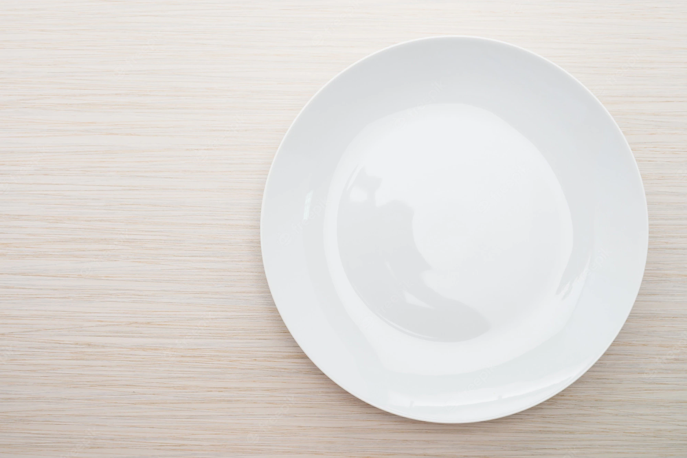

{{recipesService.selectedRecipe.nickname}}
{{recipesService.selectedRecipe.nombre}}
{{recipesService.selectedRecipe.duracion}}

{{recipesService.selectedRecipe.valoracion}} Me gusta
Descripción
{{recipesService.selectedRecipe.descripcion}}
Alimentos
{{food.nombre}}
{{food.cantidad}}{{food.unidades}}
Preparación
{{step.descripcion}}
Consejos
{{recipesService.selectedRecipe.extra}}